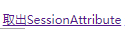

3. 常用注解 3.1.@RequestParam[重要]
原因：在绑定机制中，要求参数名称 必须和控制器中方法的形参名称 保持一致。
作用：把请求的名称参数给 控制器中的形参赋值 。
属性
value/name：请求参数的名称required：请求参数中是否必须提供此参数。默认值: true。 表示必须提供，如果不提供将报错defaultValue：请求参数的默认值
请求类型
Get请求 POST DELETE请求 ：请求头中的Content-Type 为 application/x-www-form-urlencoded[默认属性] 如果改用 json 字符串来传值的话，类型设置为 application/json，点击发送的话，会报错，后台接收不到值，为 null。——>引入注解@RequestBody
1 <a href ="yyx/hello?username=yyx" > 入门程序</a >
1 2 3 4 5 @RequestMapping (path = "/hello" )public String sayHello (@RequestParam(value = "username" , required= false ) String name) System.out.println(name); return "success" ; }
前端使用$.ajax的话，一定要指定 contentType: "application/json;charset=utf-8;"，默认为 application/x-www-form-urlencoded。
3.2.@RequestBody[重要]
小对比
Post 从content-type方面总结： ① form-data、x-www-form-urlencoded：不可以用@RequestBody；可以用@RequestParam。见postman的格局，这两种方式的时候没有json字符串部分。
② application/json：json字符串部分可以用@RequestBody；url中的?后面参数可以用@RequestParam。见postman的格局
从两种注解方式总结：** @RequestBody
1 2 3 4 (@RequestBody Map map) (@RequestBody Object object) application/json时候可用 form-data、x-www-form-urlencoded时候不可用
@RequestParam
1 2 (@RequestParam Map map) application/json时候，json字符串部分不可用，url中的?后面添加参数即可用，form-data、x-www-form-urlencoded时候可用，但是要将Headers里的Content-Type删掉
1 2 3 4 (@RequestParam String waterEleId, @RequestParam String enterpriseName) application/json时候，json字符串部分不可用，url中的?后面添加参数即可用 form-data、x-www-form-urlencoded时候可用，且参数可以没有顺序（即前端传过来的参数或者url中的参数顺序不必和后台接口中的参数顺序一致，只要字段名相同就可以），但是要将Headers里的Content-Type删掉
1 2 (@RequestParam Object object) 不管application/json、form-data、x-www-form-urlencoded都不可用
GET请求 @RequestBody
1 2 RequestBody Map / Object GET请求中不可以使用@RequestBody
@RequestParam
1 2 3 4 5 6 (@RequestParam Map map) 在url中的?后面添加参数即可使用 (@RequestParam String waterEleId,@RequestParam String enterpriseName) 在url中的?后面添加参数即可使用 (@RequestParam Object object) GET请求中不可以使用
3.3.@PathVariable[重要] 3.3.1.Rest风格
请求路径一样，可以根据不同的请求方式去执行后台的不同方法
Restful风格的URL优点
1 2 1.理解本真的REST架构风格: http://kb.cnblogs.com/page/186516/ 2.深入浅出REST: http://www.infog.com/cn/articles/rest-introduction
3.3.2.@PathVariable
作用：用于绑定url中的占位符。
请求url中/delete/{id}，这个{id}就是url占位符
url支持占位符是spring3.0之后加入的，是springmvc支持rest风格URL的一个重要标志。
属性
value：用于指定url中占位符名称required：是否必须提供占位符
1 <a href ="yyx/hello/yyx" > 入门程序</a >
1 2 3 4 5 @RequestMapping (path = "/hello/{abcd}" )public String sayHello (@PathVariable(value = "abcd" ) String name) System.out.println(name); return "success" ; }
作用：用于获取请求消息头
属性：【同3.1@RequestParam】
在实际开发中一般不怎么用
1 <a href ="yyx/hello" > 入门程序</a >
1 2 3 4 5 6 7 @RequestMapping (path = "/hello" )public String sayHello (@RequestHeader(value = "Content-Type" ,required = false ) String contype,@RequestHeader (value = "Date" ) String date) { System.out.println(contype); System.out.println(date); return "success" ; }
1 2 multipart/form-dataBROKEN REFERENCE 23
3.5.@CookieValue
1 <a href="yyx/hello">入门程序</a>
1 2 3 4 5 @RequestMapping (path = "/hello" )public String sayHello (@CookieValue(value = "JSESSIONID" ,required = false ) String id) System.out.println(id); return "success" ; }
1 8115EE2160ABBA27808A76664D050473
总结1：
总结2：
get请求的 headers 中没有 content-type 这个字段，post 的 content-type 有 ：
application/x-www-form-urlencoded，这种就是一般的文本表单用 post 传地数据，只要将得到的 data 用 @RequestParam 或 request.getParamter() 获取即可；multipart/form-data ，用于文件上传，此时 form 的 enctype 属性必须指定为 multipart/form-data；application/json，将数据以json对象的格式传递text/xml
put 和 delete 请求的headers 是有 content-type 这个字段的，只不过这两个方法类型目前不常用；
3.6.@ModelAttribute
作用：该注解是SpringMVC4.3版本以后新加入的，它可以用于修饰方法和参数。
在方法上：当前方法会在控制器的方法执行之前，先执行。它可以修饰没有返回值的方法，也可以修饰有具体返回值的方法。
在参数上，获取指定的数据给参数赋值。
属性:
value/name：用于获取数据的key。key可以是POJO的属性名称，也可以是map结构的key。
应用场景：当表单提交数据不是完整的实体类数据时，保证没有提交数据的字段使用数据库对象原来的数据。
例如：我们在编辑一个用户时，用户有一个创建信息字段，该字段的值是不允许被修改的。在提交表单数据是肯定没有此字段的内容，一旦更新会把该字段内容置为null,此时就可以使用此注解解决问题
3.6.1.@ModelAttribute方法会在控制器的方法执行之前执行 1 2 3 4 5 6 7 8 9 10 11 12 13 14 15 16 17 18 @RequestMapping (path="/saveUser" ) public String testController (String uname, String age) { System.out.println("testController" + uname + age); return "success" ; } @ModelAttribute public void testModelAttribute (String uname, String age) { System.out.println("testModelAttribute" +uname + age); } <form action="yyx/saveUser" method="post" > 账户名：<input type="text" name="uname" ><br/> 年 龄：<input type="text" name="age" ><br/> <input type="submit" value="ok" > </form>
3.6.2.@ModelAttribute方法带返回值——保证没有提交数据的字段使用数据库对象原来的数据 1 2 3 4 5 6 7 8 9 10 11 12 13 14 15 16 17 18 19 20 21 22 23 24 25 26 @RequestMapping (path="/saveUser" ) public String testController (User user) { System.out.println("testController" + user); return "success" ; } @ModelAttribute public User testModelAttribute (String uname, String age) { User user = serviceFindByName(uname); System.out.println("testModelAttribute run..." + user); return user; } public User serviceFindByName (String username) { User user = new User(); user.setUname(username); user.setAge(19 ); user.setDate(new Date()); return user; }
1 2 3 4 5 <form action ="yyx/saveUser" method ="post" > 账户名：<input type ="text" name ="uname" > <br /> 年 龄：<input type ="text" name ="age" > <br /> <input type ="submit" value ="ok" > </form >
表单中数据会覆盖 从数据库读取的数据
3.6.3.@ModelAttribute方法不带返回值——保证没有提交数据的字段使用数据库对象原来的数据 1 2 3 4 5 6 7 8 9 10 11 12 13 14 15 16 17 18 19 @RequestMapping (path="/saveUser" ) public String testController (@ModelAttribute("abcd" ) User user) { System.out.println("testController" + user); return "success" ; } @ModelAttribute public void testModelAttribute (String uname, String age, Map<String,User> map) { User user = serviceFindByName(uname); System.out.println("testModelAttribute run..." + user); map.put("abcd" ,user); }
表单中数据会覆盖 从数据库读取的数据
3.7.@SessionAttributes[重要]
默认情况下Spring MVC将模型中的数据存储到request域中。当一个请求结束后，数据就失效了。如果要跨页面使用。那么需要使用到session
作用：可以使得模型中的数据存储一份到session域中
范围：仅仅作用在类上
属性：
value/names：存储到session域数据的属性名称types：用于指定存入的数据类型
1 2 开始EL表达式注解 <%@ page contentType="text/html;charset=UTF-8" language="java" isELIgnored="false" %>
1 2 3 4 5 6 7 sessionScope.username: ${sessionScope.username}<br> sessionScope.password: ${sessionScope.password}<br> sessionScope.age: ${sessionScope.age}<br> requestScope.username: ${requestScope.username}<br> requestScope.password: ${requestScope.password}<br> requestScope.age: ${requestScope.age}<br>
1 2 3 4 5 6 7 8 9 10 11 12 13 14 15 16 17 18 19 20 21 22 23 24 25 26 27 28 29 30 31 32 33 34 35 36 37 38 39 package top.carpenter.controller;import org.springframework.stereotype.Controller;import org.springframework.ui.Model;import org.springframework.ui.ModelMap;import org.springframework.web.bind.annotation.RequestMapping;import org.springframework.web.bind.annotation.SessionAttributes;import org.springframework.web.bind.support.SessionStatus;@Controller @SessionAttributes (value = {"username" ,"password" })@RequestMapping (path="/springmvc" )public class SessionAttributesTest @RequestMapping ("/sessionPut" ) public String testPut (Model model) { model.addAttribute("username" ,"gold" ); model.addAttribute("password" ,"123" ); model.addAttribute("age" ,"23" ); return "success" ; } @RequestMapping ("/sessionGet" ) public String testGet (ModelMap model) { System.out.println(model.get("username" )); System.out.println(model.get("password" )); System.out.println(model.get("age" )); return "success" ; } @RequestMapping ("/sessionClean" ) public String testClean (SessionStatus sessionStatus) { sessionStatus.setComplete(); return "success" ; } }
1 2 3 <a href="springmvc/sessionPut">存入SessionAttribute</a> <a href="springmvc/sessionGet">取出SessionAttribute</a> <a href="springmvc/sessionClean">清除SessionAttribute</a>
